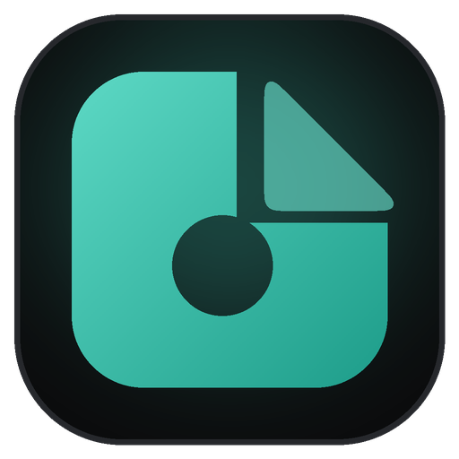

SatsumaHold Shift, drag a file, and drop it on what you want. Pictures, videos, music, PDFs, ZIP and RAR files. Free, works offline, and your files never leave your PC.
⬇ Download for WindowsFree · Windows 10 and 11 · No sign-up · Updates itself
Start dragging any file in File Explorer or on your desktop, or right-click it and pick what you want from the Satsuma menu.
A wheel of options appears. Options that don't fit your file are greyed out and tell you why.
The new file appears next to the original. The original is never changed.
iPhone HEIC to JPG, WebP to PNG, resize, rotate, remove the background, watermark, read QR codes.
MP4, MOV, WebM, GIF. Trim, rotate, save the sound as MP3, or pictures from the video.
Too big for Discord or email? Pick a size like 10 MB and Satsuma makes it fit.
Merge, split, compress, turn pages into pictures, and turn photos of paper into clean scans.
Extract, look inside, test, make archives with passwords, split big ones into parts.
Copy the text out of a screenshot or a photo of a page, straight to your clipboard.
MP3, M4A, WAV, FLAC, OGG, Opus. Trim the start or end.
Dark or light, your colours, wheel shapes and sizes, sounds, favourites at the top.
Windows shows this for new apps from small makers that haven't bought a code-signing certificate yet. It isn't a virus warning. Click More info, then Run anyway.
Want to double-check? Upload the installer to VirusTotal, which scans it with about 70 antivirus programs.
Yes. No ads, no account, no trial.
Yes, everything happens on your PC, even removing backgrounds.
You don't have to. Satsuma checks for new versions and updates itself in one click, keeping your settings.
It opens and extracts RAR files. Making new RAR files isn't possible for free apps (the format belongs to WinRAR), so Satsuma makes ZIP and 7z files, which open everywhere.
Windows Settings → Apps → Installed apps → Satsuma → Uninstall. Or in Satsuma: About → Uninstall.